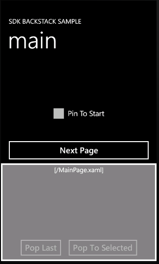
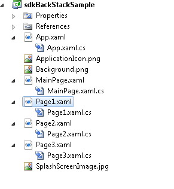
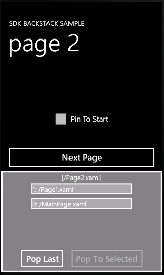
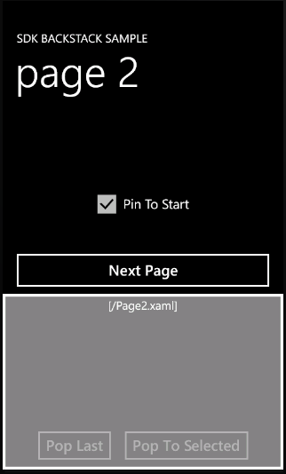

This sample demonstrates how to modify the navigation of your application by manipulating its back navigation history, called the back stack. In Windows Phone OS 7.1, functionality has been added to the NavigationService API for working with, and enabling the inspection of, the navigation history. These properties and methods are used in the topic to inspect the back stack, remove entries, and then observe the effect those changes have on the navigation through the application.
This is pre-release documentation for the Windows Phone OS 7.1 development platform. To provide feedback on this documentation, click here. For the Windows Phone OS 7.0 developer documentation, click here.
August 19, 2011
Build and Run the Sample
You will need to install Windows Phone SDK 7.1 RC to run this sample. To get started, go to App Hub.
To run the sample-
After unzipping the sample, double-click sdkBackStackSample.sln to open the solution.
-
Run the application by selecting the Debug | Start Debugging menu command.
-
The application launches, and the MainPage.xaml page is displayed. The bottom half of the screen displays the back stack visualization. There is nothing in the navigation history at this point, so the list is empty. The current page is shown as [/MainPage.xaml]
-
Tap the Next Page button. Observe that the page changes to page 1 and the back stack list now contains /MainPage.xaml.
-
Tap the Next Page button again. The current page is page 2. The back stack now contains two entries: /Page1.xaml and /MainPage.xaml. As a stack, it shows the newest entry at the top and the oldest entry at the bottom.
-
Tap the Pop Last button. The /Page1.xaml entry is removed from the back stack list.
-
Tap the hardware Back button on your device. The page main page is displayed and the back stack is empty. This happened because we removed /Page1.xaml from the back stack in the previous step, thus changing the back navigation from Page 2 -> Page1 -> MainPage to Page2 -> MainPage.
-
Tap the Next Page button on main page. The page page 1 is displayed. The back stack has one entry, /MainPage.xaml.
-
Tap the Next Page button on page 1. The page page 2 is now displayed. The back stack has two entries, /Page1.xaml and /MainPage.xaml.
-
Tap Pin To Start on page 2.
-
A Tile named page 2 is created on the Start screen of the device.
-
Tap the Tile you created in the preceding step. The application is launched, and page 2 is displayed. Notice also that the back stack is empty. If you tap the Back button on the device, the application terminates. Observe that page 2 was pinned to the Start screen on the device. The Tile was then tapped, the application launched, and Page2 is displayed. The back stack is now empty.
Description
 Note:
Note: |
|---|
|
The steps in the following procedure are for Visual Studio 2010 Express for Windows Phone. You may see some minor variations in menu commands or window layouts when you are using the add-in for Visual Studio 2010 Professional or Visual Studio 2010 Ultimate. |
This topic contains the following sections:
|
Note: |
|---|
|
The terms navigation history and back stack are used interchangeably throughout this topic to refer to the back navigation history that is exposed by the NavigationService.BackStack property |
Introducing the Navigation History Back Stack
The navigation history of an application is represented as a last-in, first-out structure called a stack. This is also referred to here as the back stack, since it contains the set of pages in a stack structure that represents the back navigation of your application. Think of this stack as a stack of plates. The last plate you add to the stack will be the first plate you can remove. The newest item is added to the top of this stack. This is referred to as a push operation. Removing the top item in a stack is referred to as a pop operation. You can retrieve something from a stack only by removing items one at a time from the top of the stack. The concept of a stack is shown in the following figure.
When a page in your application calls Navigate, the current page is put onto the back stack and a new instance of the destination page is created and displayed. As you navigate through pages in an application, entries are added to this stack. When a page calls GoBack, or when the user presses the phone’s Back button, the current page is abandoned and the page at the top of the stack is popped off the back stack and displayed. This back navigation continues until there are no more entries in the stack. At this point, a tap of the phone’s Back button will terminate the application.
While most applications will never have to manipulate the back stack, and function perfectly fine with the default navigation, some developers need to adjust the navigation history to provide the best user experience for their application. There are many reasons for wanting to do this. For example, you may have a login page in your application. Once the user has logged in, you may not want the user to be able to navigate back to that page. This topic demonstrates how to use the BackStack property and the RemoveBackEntry method to manipulate the navigation history.
Visualizing the Back Stack in the Application
This section describes how to visualize the navigation history, or back stack, in the application so that it can be easily inspected while the application is running. Our application consists of multiple pages. As we navigate from one page to the next, we want to see what entries are on the back stack. We also want an easy way to remove entries, and see all updates to the back stack. In this application, we will visualize the back stack as a list on the screen. This is illustrated in the following figure. This is done so that the concepts of the back stack can be understood. You should not need to show the back stack entries in your application, but that is up to you.
The grey area in the preceding figure is the visualization of the back stack in our application. As we navigate around the application, the list will be populated with the entries from the navigation history. We will use the Pop Last and Pop To Selected buttons to change the navigation history. This grey area is not on each individual page. Instead, the list is added centrally to the application’s RootFrame. The RootFrame object is the PhoneApplicationFrame associated with the application. Each application has one RootFrame. Each page of the application, or instance of PhoneApplicationPage, is set as the Content of this frame by the navigation framework when the user navigates to that page. The default template for the RootFrame object that you get when you create a new Windows Phone application displays the application pages, and other elements such as the system tray and Application Bar for the application. In this example, we create a template that shows the application pages but leaves room to display the back stack as a list at the bottom of the screen. As you navigate from page to page, this centralized list is updated to reflect the current state of the navigation history, or back stack, of the application. For more information about the anatomy of a Windows Phone application, see Frame and Page Navigation Overview for Windows Phone.
To visualize the back stack-
In Visual Studio 2010 Express for Windows Phone, create a new project by selecting the File | New Project menu command.
-
The New Project window is displayed. Expand the Visual C# templates, and then select the Silverlight for Windows Phone templates.
-
Select the Windows Phone Application template. Fill in the Name with a name of your choice.
-
Click OK. The Windows Phone Platform selection window will appear. Select Windows Phone 7.1 for the Target Windows Phone Version .
-
Click OK. A new project is created, and MainPage.xaml is opened in the Visual Studio designer window.
-
The next step is to change the template used by the RootFrame of the application to visualize the back stack. This is done by placing a ListBox in a custom ControlTemplate for the RootFrame. This new template will be defined in the Application.Resources section of the App.xaml page. In the App.xaml file, replace the Application.Resources entry with the following markup. The template is made up of a grid with two rows. The ContentPresenter is in the first row of the grid. This is where each page’s content will be displayed. Another grid is added to the second row of this grid to contain the UI for the back stack. This UI consists of a ListBox to show each entry in the back stack as well as some buttons to manipulate the back stack.
XAMLEdit|Removexaml<Application.Resources> <ControlTemplate x:Name="NewFrameTemplate"> <Grid x:Name="ClientArea"> <Grid.RowDefinitions> <RowDefinition Height="*"/> <RowDefinition Height="Auto"/> </Grid.RowDefinitions> <ContentPresenter Grid.Row="0"/> <Border Grid.Row="1" BorderBrush="{StaticResource PhoneForegroundBrush}" BorderThickness="{StaticResource PhoneBorderThickness}" Height="300"> <Grid x:Name="ContentPanel" Background="{StaticResource PhoneSemitransparentBrush}"> <Grid.RowDefinitions> <RowDefinition Height="Auto"/> <RowDefinition /> <RowDefinition Height="Auto"/> </Grid.RowDefinitions> <TextBlock Grid.Row="0" x:Name="CurrentPage" Style="{StaticResource PhoneTextSubtleStyle}" HorizontalAlignment="Center"/> <ListBox Grid.Row="1" ItemsSource="{Binding}" x:Name="HistoryList" HorizontalAlignment="Center" Height="300"> <ListBox.ItemTemplate> <DataTemplate> <Border BorderBrush="{StaticResource PhoneForegroundBrush}" BorderThickness="{StaticResource PhoneBorderThickness}" Width="300" Margin="5" Background="DarkGray" HorizontalAlignment="Center"> <TextBlock Text="{Binding}"/> </Border> </DataTemplate> </ListBox.ItemTemplate> </ListBox> <StackPanel Grid.Row="2" Orientation="Horizontal" HorizontalAlignment="Center"> <Button Content="Pop Last" x:Name="btnPopLast" IsEnabled="false"/> <Button Content="Pop To Selected" x:Name="btnPopToSelected" IsEnabled="false"/> </StackPanel> </Grid> </Border> </Grid> </ControlTemplate> </Application.Resources><Application.Resources> <ControlTemplate x:Name="NewFrameTemplate"> <Grid x:Name="ClientArea"> <Grid.RowDefinitions> <RowDefinition Height="*"/> <RowDefinition Height="Auto"/> </Grid.RowDefinitions> <ContentPresenter Grid.Row="0"/> <Border Grid.Row="1" BorderBrush="{StaticResource PhoneForegroundBrush}" BorderThickness="{StaticResource PhoneBorderThickness}" Height="300"> <Grid x:Name="ContentPanel" Background="{StaticResource PhoneSemitransparentBrush}"> <Grid.RowDefinitions> <RowDefinition Height="Auto"/> <RowDefinition /> <RowDefinition Height="Auto"/> </Grid.RowDefinitions> <TextBlock Grid.Row="0" x:Name="CurrentPage" Style="{StaticResource PhoneTextSubtleStyle}" HorizontalAlignment="Center"/> <ListBox Grid.Row="1" ItemsSource="{Binding}" x:Name="HistoryList" HorizontalAlignment="Center" Height="300"> <ListBox.ItemTemplate> <DataTemplate> <Border BorderBrush="{StaticResource PhoneForegroundBrush}" BorderThickness="{StaticResource PhoneBorderThickness}" Width="300" Margin="5" Background="DarkGray" HorizontalAlignment="Center"> <TextBlock Text="{Binding}"/> </Border> </DataTemplate> </ListBox.ItemTemplate> </ListBox> <StackPanel Grid.Row="2" Orientation="Horizontal" HorizontalAlignment="Center"> <Button Content="Pop Last" x:Name="btnPopLast" IsEnabled="false"/> <Button Content="Pop To Selected" x:Name="btnPopToSelected" IsEnabled="false"/> </StackPanel> </Grid> </Border> </Grid> </ControlTemplate> </Application.Resources>
-
In the App.xaml code-behind file, add the following declarations to the top of the App class. These will be used to reference the UI elements that were created from the custom template.
C#Edit|Removecsharp// UI controls on the RootFrame template. ListBox historyListBox; // ListBox for listing the navigation history Button popLastButton; // Button to pop the newest entry from the back stack Button popToSelectedButton; // Button to pop all entries in the back stack up to the selected entry TextBlock currentPageTextBlock; // TextBlock to display the current page the user is on
// UI controls on the RootFrame template. ListBox historyListBox; // ListBox for listing the navigation history Button popLastButton; // Button to pop the newest entry from the back stack Button popToSelectedButton; // Button to pop all entries in the back stack up to the selected entry TextBlock currentPageTextBlock; // TextBlock to display the current page the user is on
-
In the code-behind file of the App.xaml page, add the following lines of code in the constructor, directly after the call to InitializePhoneApplication. First, the template for the RootFrame is set to NewFrameTemplate, which is the name of the template we defined in Step 6. The event handlers for the buttons on the template are also hooked up here. Finally, a delegate is defined for the Navigated event of the RootFrame to update the history.
C#Edit|Removecsharp// Set the template for the RootFrame to the new template we created in the Application.Resources in App.xaml RootFrame.Template = Resources["NewFrameTemplate"] as ControlTemplate; RootFrame.ApplyTemplate(); popToSelectedButton = (VisualTreeHelper.GetChild(RootFrame, 0) as FrameworkElement).FindName("btnPopToSelected") as Button; popToSelectedButton.Click += new RoutedEventHandler(PopToSelectedButton_Click); popLastButton = (VisualTreeHelper.GetChild(RootFrame, 0) as FrameworkElement).FindName("btnPopLast") as Button; popLastButton.Click += new RoutedEventHandler(PopLastButton_Click); currentPageTextBlock = (VisualTreeHelper.GetChild(RootFrame, 0) as FrameworkElement).FindName("CurrentPage") as TextBlock; historyListBox = (VisualTreeHelper.GetChild(RootFrame, 0) as FrameworkElement).FindName("HistoryList") as ListBox; historyListBox.SelectionChanged += new SelectionChangedEventHandler(HistoryList_SelectionChanged); // Update the navigation history listbox whenever a navigation happens in the application RootFrame.Navigated += delegate { RootFrame.Dispatcher.BeginInvoke(delegate { UpdateHistory(); }); };// Set the template for the RootFrame to the new template we created in the Application.Resources in App.xaml RootFrame.Template = Resources["NewFrameTemplate"] as ControlTemplate; RootFrame.ApplyTemplate(); popToSelectedButton = (VisualTreeHelper.GetChild(RootFrame, 0) as FrameworkElement).FindName("btnPopToSelected") as Button; popToSelectedButton.Click += new RoutedEventHandler(PopToSelectedButton_Click); popLastButton = (VisualTreeHelper.GetChild(RootFrame, 0) as FrameworkElement).FindName("btnPopLast") as Button; popLastButton.Click += new RoutedEventHandler(PopLastButton_Click); currentPageTextBlock = (VisualTreeHelper.GetChild(RootFrame, 0) as FrameworkElement).FindName("CurrentPage") as TextBlock; historyListBox = (VisualTreeHelper.GetChild(RootFrame, 0) as FrameworkElement).FindName("HistoryList") as ListBox; historyListBox.SelectionChanged += new SelectionChangedEventHandler(HistoryList_SelectionChanged); // Update the navigation history listbox whenever a navigation happens in the application RootFrame.Navigated += delegate { RootFrame.Dispatcher.BeginInvoke(delegate { UpdateHistory(); }); };
-
Add the following methods to the code-behind file for the App.xaml page. UpdateHistory refreshes the UI for the navigation back stack. This is called when the Navigated event fires on the RootFrame, which occurs whenever any navigation happens in the application. The method iterates over all entries in the BackStack property and adds them to the ListBox. It also displays the URI of the current page. If there are entries in the navigation back stack, the Pop Last button is enabled. HistoryList_SelectionChanged enables or disables the Pop To Selected button depending on whether an item in the navigation history list was selected.
C#Edit|Removecsharp/// <summary> /// Use the BackStack property to refresh the navigation history list box with the latest history. /// </summary> void UpdateHistory() { historyListBox.Items.Clear(); int i = 0; foreach (JournalEntry journalEntry in RootFrame.BackStack.Reverse()) { historyListBox.Items.Insert(0, i + ": " + journalEntry.Source); i++; } currentPageTextBlock.Text = "[" + RootFrame.Source + "]"; if (popLastButton != null) { popLastButton.IsEnabled = (historyListBox.Items.Count() > 0); } } /// <summary> /// Handle the SelectionChanged event for navigation history list. /// </summary> private void HistoryList_SelectionChanged(object sender, SelectionChangedEventArgs e) { if (historyListBox != null && popToSelectedButton != null) { popToSelectedButton.IsEnabled = (historyListBox.SelectedItems.Count > 0) ? true : false; } }/// <summary> /// Use the BackStack property to refresh the navigation history list box with the latest history. /// </summary> void UpdateHistory() { historyListBox.Items.Clear(); int i = 0; foreach (JournalEntry journalEntry in RootFrame.BackStack.Reverse()) { historyListBox.Items.Insert(0, i + ": " + journalEntry.Source); i++; } currentPageTextBlock.Text = "[" + RootFrame.Source + "]"; if (popLastButton != null) { popLastButton.IsEnabled = (historyListBox.Items.Count() > 0); } } /// <summary> /// Handle the SelectionChanged event for navigation history list. /// </summary> private void HistoryList_SelectionChanged(object sender, SelectionChangedEventArgs e) { if (historyListBox != null && popToSelectedButton != null) { popToSelectedButton.IsEnabled = (historyListBox.SelectedItems.Count > 0) ? true : false; } }
-
Add the following method to the code-behind file for the App.xaml page. This handles the click event on the Pop Last button. When the user taps this button, the last entry added to the back stack is removed. This method uses the RemoveBackEntry method on the RootFrame. After the entry has been removed, the list of back stack entries is refreshed by calling UpdateHistory.
C#Edit|Removecsharp/// <summary> /// Remove the last entry from the back stack. /// </summary> private void PopLastButton_Click(object sender, RoutedEventArgs e) { // If RemoveBackEntry is called on an empty back stack, an InvalidOperationException is thrown. // Check to make sure the back stack has entries before calling RemoveBackEntry. if (RootFrame.BackStack.Count() > 0) RootFrame.RemoveBackEntry(); // Refresh the history list since the back stack has been modified. UpdateHistory(); }/// <summary> /// Remove the last entry from the back stack. /// </summary> private void PopLastButton_Click(object sender, RoutedEventArgs e) { // If RemoveBackEntry is called on an empty back stack, an InvalidOperationException is thrown. // Check to make sure the back stack has entries before calling RemoveBackEntry. if (RootFrame.BackStack.Count() > 0) RootFrame.RemoveBackEntry(); // Refresh the history list since the back stack has been modified. UpdateHistory(); }
-
Add the following method to the code-behind file for the App.xaml page. If the user selects an item on the back stack and taps Pop To Selected, all entries up to the selected entry are removed from the back stack. The RemoveBackEntry method on the RootFrame is used to remove each entry from the back stack. After the entries have been removed, the back stack UI is refreshed by calling UpdateHistory.
C#Edit|Removecsharp/// <summary> /// Remove all entries from the back stack up to the selected item, but not including it. /// </summary> private void PopToSelectedButton_Click(object sender, RoutedEventArgs e) { // Make sure something has been selected. if (historyListBox != null && historyListBox.SelectedIndex >= 0) { for (int i = 0; i < historyListBox.SelectedIndex; i++) { RootFrame.RemoveBackEntry(); } // Refresh the history list since the back stack has been modified. UpdateHistory(); } }/// <summary> /// Remove all entries from the back stack up to the selected item, but not including it. /// </summary> private void PopToSelectedButton_Click(object sender, RoutedEventArgs e) { // Make sure something has been selected. if (historyListBox != null && historyListBox.SelectedIndex >= 0) { for (int i = 0; i < historyListBox.SelectedIndex; i++) { RootFrame.RemoveBackEntry(); } // Refresh the history list since the back stack has been modified. UpdateHistory(); } }
This section described how to add a custom template for the RootFrame of our application so that we can inspect and modify the back stack as we navigate around our application. To demonstrate this functionality, we need to add multiple pages to the application. This is described in the next section.
Adding Pages to the Application
To demonstrate navigation history inspection and manipulation, we need to add multiple pages to our application. This section describes how to add these pages to the application. Our example will consist of four pages: MainPage.xaml, Page1.xaml, Page2.xaml, and Page3.xaml. Each page is structured the same and uses the same UI. As a result, the following steps will be repeated for each page. In this example, no attempt has been made to reuse code through helper methods or by wrapping the UI in a UserControl.
To add pages to the application-
Add a new page to the project by selecting the Project | Add New Item menu command. The Add New Item window will be displayed. Select Windows Phone Portrait Page in the list of items to add and type Page1.xaml in the Name field. Click Add to add the new page to your project. A new page named Page1.xaml is now added to the project.
-
The first thing to do is to define the page UI. In Page1.xaml, replace the grid named ContentPanel with the following code. This creates a CheckBox used to toggle whether the page is pinned to the Start screen and a Button to navigate to the next page in the application, if a next page exists. Pinning the page to the Start screen of the phone is a very interesting case and is demonstrated here to show the state of the back stack when you click on the page’s Tile on the Start screen to launch the application. The event handlers shown in the following code are described in subsequent steps.
XAMLEdit|Removexaml<!--ContentPanel - place additional content here--> <Grid x:Name="ContentPanel" Grid.Row="1" Margin="12,0,12,0"> <CheckBox x:Name="PinToStartCheckBox" Content="Pin To Start" IsChecked="False" HorizontalAlignment="Center" Click="PinToStartCheckBox_Click"/> <Button x:Name="btnNext" Content="Next Page" Height="80" VerticalAlignment="Bottom" Click="btnNext_Click"/> </Grid><!--ContentPanel - place additional content here--> <Grid x:Name="ContentPanel" Grid.Row="1" Margin="12,0,12,0"> <CheckBox x:Name="PinToStartCheckBox" Content="Pin To Start" IsChecked="False" HorizontalAlignment="Center" Click="PinToStartCheckBox_Click"/> <Button x:Name="btnNext" Content="Next Page" Height="80" VerticalAlignment="Bottom" Click="btnNext_Click"/> </Grid>
-
In the code-behind file for this page, add the following using directive.
-
Add the following variable declaration to the top of the class.
C#Edit|Removecsharp// The URI string of the next page to navigate to from this page. // String.Empty here means that there is no next page. private string nextPage;
// The URI string of the next page to navigate to from this page. // String.Empty here means that there is no next page. private string nextPage;
-
Add the following lines of code after InitializeComponent() in the class constructor.
C#Edit|Removecsharp// Set the application title - use the same application title on each page. ApplicationTitle.Text = "SDK BACKSTACK SAMPLE"; // Set a unique page title. In this example, we will use "page 1", "page 2", and so on. PageTitle.Text = "page 1"; // Set the URI string of the next page, or String.Empty if there is no next page. nextPage = "/Page2.xaml";
// Set the application title - use the same application title on each page. ApplicationTitle.Text = "SDK BACKSTACK SAMPLE"; // Set a unique page title. In this example, we will use "page 1", "page 2", and so on. PageTitle.Text = "page 1"; // Set the URI string of the next page, or String.Empty if there is no next page. nextPage = "/Page2.xaml";
-
Add the following method to override the OnNavigatedTo event handler. Here the Next Page button is shown if this page has the nextPage variable set. The Pin To Start check box is set depending on whether a Tile for this page exists.
C#Edit|Removecsharpprotected override void OnNavigatedTo(System.Windows.Navigation.NavigationEventArgs e) { base.OnNavigatedTo(e); // Show the Next button, if we have defined a next page. btnNext.Visibility = (String.IsNullOrWhiteSpace(nextPage)) ? Visibility.Collapsed : Visibility.Visible; if (ShellTile.ActiveTiles.FirstOrDefault(o => o.NavigationUri.ToString().Contains(NavigationService.Source.ToString())) == null) PinToStartCheckBox.IsChecked = false; else PinToStartCheckBox.IsChecked = true; }
protected override void OnNavigatedTo(System.Windows.Navigation.NavigationEventArgs e) { base.OnNavigatedTo(e); // Show the Next button, if we have defined a next page. btnNext.Visibility = (String.IsNullOrWhiteSpace(nextPage)) ? Visibility.Collapsed : Visibility.Visible; if (ShellTile.ActiveTiles.FirstOrDefault(o => o.NavigationUri.ToString().Contains(NavigationService.Source.ToString())) == null) PinToStartCheckBox.IsChecked = false; else PinToStartCheckBox.IsChecked = true; }
-
Add the following method to handle the Click event for the Next Page button on the page. If the nextpage variable has been defined for this page, the Navigate method is called to navigate to that page.
C#Edit|Removecsharp/// <summary> /// Navigate to the next page. /// </summary> private void btnNext_Click(object sender, RoutedEventArgs e) { // Make sure to attempt navigation only if we have defined a next page. if (!String.IsNullOrWhiteSpace(nextPage)) { this.NavigationService.Navigate(new Uri(nextPage, UriKind.Relative)); } }/// <summary> /// Navigate to the next page. /// </summary> private void btnNext_Click(object sender, RoutedEventArgs e) { // Make sure to attempt navigation only if we have defined a next page. if (!String.IsNullOrWhiteSpace(nextPage)) { this.NavigationService.Navigate(new Uri(nextPage, UriKind.Relative)); } }
-
Add the following method to handle the Click event for the Pin To Start check box on the page. This acts like a toggle. If a Tile for this page already exists on the Start screen, it is removed. If a Tile for this page does not exist on the Start screen, one is added. For more information about Tiles, see Tiles for Windows Phone.
C#Edit|Removecsharp/// <summary> /// Toggle pinning a Tile for this page on the Start screen. /// </summary> private void PinToStartCheckBox_Click(object sender, RoutedEventArgs e) { // Try to find a Tile that has this page's URI. ShellTile tile = ShellTile.ActiveTiles.FirstOrDefault(o => o.NavigationUri.ToString().Contains(NavigationService.Source.ToString())); if (tile == null) { // No Tile was found, so add one for this page. StandardTileData tileData = new StandardTileData { Title = PageTitle.Text }; ShellTile.Create(new Uri(NavigationService.Source.ToString(), UriKind.Relative), tileData); } else { // A Tile was found, so remove it. tile.Delete(); } }/// <summary> /// Toggle pinning a Tile for this page on the Start screen. /// </summary> private void PinToStartCheckBox_Click(object sender, RoutedEventArgs e) { // Try to find a Tile that has this page's URI. ShellTile tile = ShellTile.ActiveTiles.FirstOrDefault(o => o.NavigationUri.ToString().Contains(NavigationService.Source.ToString())); if (tile == null) { // No Tile was found, so add one for this page. StandardTileData tileData = new StandardTileData { Title = PageTitle.Text }; ShellTile.Create(new Uri(NavigationService.Source.ToString(), UriKind.Relative), tileData); } else { // A Tile was found, so remove it. tile.Delete(); } }
-
The previous steps describe how to add a page and update it for use in this application. To complete the application, these steps should be repeated for MainPage, Page2, and Page 3 as follows.
Page name
New page?
Changes for step 5
MainPage.xaml
No. This page was created when you created the application. Repeat steps 2 through 8 for this page.
PageTitle.Text = “main”;
nextPage = “/Page1.xaml”;
Page2.xaml
Yes. Repeat steps 1 through 8 for this page.
PageTitle.Text = “page 2”;
nextPage = “/Page3.xaml”;
Page3.xaml
Yes. Repeat steps 1 through 8 for this page.
PageTitle.Text = “page 3”;
nextPage = String.Empty
Specify String.Empty for the next page because page 3 is the last page in our application and we don’t want to navigate forward from page 3.
When you have completed this section, your solution in the Solution Explorer is shown in the following figure. The application has four pages, and the forward navigation through these pages is as follows: MainPage.xaml -> Page1.xaml -> Page2.xaml -> Page3.xaml.
This section describes how to run the application that was produced in this topic.
To test the application-
Run the application by selecting the Debug | Start Debugging menu command.
-
The application launches, and the MainPage.xaml page is displayed. This is shown in the following figure. The bottom half of the screen, displays the back stack visualization. There is nothing in the navigation history at this point, so the list is empty. The current page is shown as [/MainPage.xaml]
-
Tap the Next Page button. Observe that the page changes to page 1 and the back stack list now contains /MainPage.xaml .
-
Tap the Next Page button again. The current page is page 2. The back stack now contains two entries: /Page1.xaml and /MainPage.xaml. As a stack, it shows the newest entry at the top and the oldest entry at the bottom. This is illustrated in the following figure.
 -
Tap the Pop Last button. The /Page1.xaml entry is removed from the back stack list.
-
Tap the hardware Back button on your device. The page main page is displayed and the back stack is empty. This happened because we removed /Page1.xaml from the back stack in the previous step, thus changing the back navigation from Page 2 -> Page1 -> MainPage to Page2 -> MainPage.
-
Tap the Next Page button on main page. The page page 1 is displayed. The back stack has one entry, /MainPage.xaml.
-
Tap the Next Page button on page 1. The page page 2 is now displayed. The back stack has two entries, /Page1.xaml and /MainPage.xaml.
-
Tap Pin To Start on page 2.
-
A Tile named page 2 is created on the Start screen of the device.
-
Tap the Tile you created in the preceding step. The application is launched, and page 2 is displayed. Notice also that the back stack is empty. If you tap the Back button on the device, the application terminates. An example of this state is shown in the following figure. page 2 was pinned to the Start screen on the device. The Tile was then tapped, the application launched, and Page2 is displayed. The back stack shown in this figure is empty.
